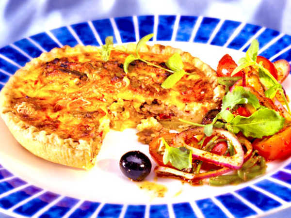

Tacopaj
Gör så här:
- Sätt ungen på 225 grader
-
Hacka samman matfettet skuret i mindre bitar med mjölet till
en grynig massa. Tillsätt kvarg och vatten. Arbeta snabbt ihop till en deg. -
Kavla eller tryck ut degen i en pajform ca 28 cm i diameter (för 4 port).
Nagga degen med en gaffel. Ställ formen i kylskåp ca 30 minuter. - Förgrädda pajskalet i ugnenmitt i ugnen ca 15 min.
-
Bryn köttfärsen i matfettet, tilssät tacokryddan och vatten.
Rör om och och låt sjuda på svag värme till vatnnet nästan kokat in - Rör i créme fraicheen och låt sjuda några minuter till
- Fyll pajskalet me färsfyllningen
- Halvera tomaterna och fördela över pajen
- Strö över osten
- Grädda mitt i ugnen ca 20 min.
Serveringsförslag:
Servera med sallad, gräddfil, och guacamole.
Vill du ha mer hetta, strö över jalapeños
 Klicka här för att se video hur man gör---->